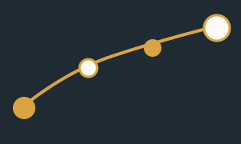
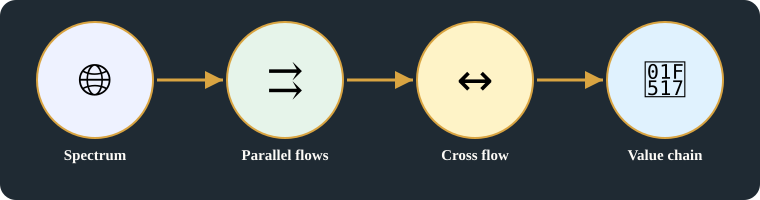
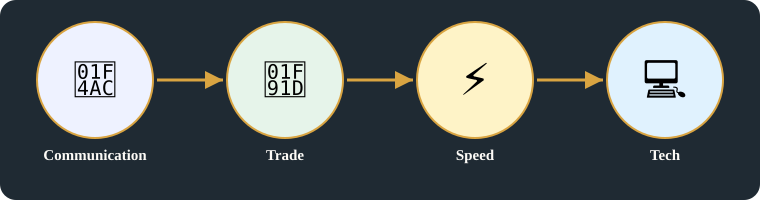

🧬 Systems Evolution
Univescal product / Business (network / Standards
The universal product: four parallel flows, cross flow, and the full value chain
Original images +
Original headline(s) first (R15), exactly as written:
- Univescal product / Business (network / Standards
Original pages behind this card, untouched. On the public repo these images are NOT included — they are in the Vercel deploy only, not in the public GitHub repo — the deploy itself is public, as with Batch 1.

Transcription notes — archive only, not on the main page:
- 'connec' is cut off at the page edge on the original page; the intended word is not confirmed, so the main page does not guess it.
Archive notes (R18) — labelling and provenance, archive only:
- Key points above are the original points for this card, as written in batch2-notes.md. Original images are in the section above, untouched.
- Tags (moved from main page, per R18): Tags #universal-product #systems-evolution #industrial-business-networks #infrastructure-operations #institutions-markets #business #network Unique tag belongs only to this card. Related tags link it to other cards that share a domain or vocabulary.
- Archive note: enhanced title, detailed explanation, and diagram for this topic are added material, not the owner's original text. Original headlines and original notes are the owner's, spelling preserved. Corrections and transcription markers are in this archive section, not in main presentation.
Detailed explanation

1. A spectrum, not one thing
- A universal product is a spectrum: tech, manufacturing, software, and business together — its strength is that it carries four things in parallel, not one thing alone.
- Four parallel flows (communication): communication → trade → speed → Tech — faster communication makes trade faster, and that speed is itself a technology advantage.
- Spectrum = Tech + manufacturing + software + Business: a product that is only a good, without the software and the business around it, is not yet universal.
2. Cross flow, then tech integration
- Cross Flow: physical, informational, financial, and rules — the same product moves as a thing, as information about the thing, as money for the thing, and under rules that govern it.
- Tech Integration (network): mapping → IoT devices across the flow, plus Blockchain, AI/ML, and APIs — technology is integrated across the flow, not bolted on at the end.
- Abstraction from goods of Spectrum → full value chain, connected: the product is no longer just a good, but a whole value chain, connected end to end.
3. — R14 distinction and cross-domain vocabulary
- Spectrum and standards are not one gate: FCC / TRAI regulate a national market and spectrum use. IETF sets Internet technical standards, IEEE sets electrical / electronics / computing standards, 3GPP sets mobile telecom specifications, and ICANN / RIRs allocate names and number resources. The universal product's spectrum therefore crosses regulation, standards, and allocation, each with a different owner.
- Signalling, endpoint, stack, and trading speed, grounded in Batch 1 cards: Signalling is the control information that makes communication work — it travels on the network lane, separate from the physical goods lane. The endpoint is the device that sends and receives it (Hardware supply and the NIC endpoint, the NIC), and the stack is the layers that carry it (The NIC and kernel stack, plus out-of-band management: driver, kernel stack, TCP/IP). Trading speed (Why networks exist: origins and business need, Building, operating and approving a product) is what that signalling and that stack make possible in a market, not a separate product on its own.
Summary:
- A universal product carries four flows in parallel, under one spectrum of tech, manufacturing, software, and business.
- Communication speed is trade speed, and that speed is a technology advantage in itself.
- Integration across the flow turns a good into a value chain, connected end to end.

Key points
- Thier strenths
- ① four parallel flows (communication): communication → trade → speed → Tech; Spectrum = Tech + manu + s/w + Business
- ② Cross Flow: physical, informational, financial, rules
- ③ Tech Integration (N/w): mapping → IOT (Devices) across flow; Blockchain, AI/ML, APIs
- ④ Abstraction from goods of Spectrum: TO full Value chain is connec
Horizontal links
- Trade / speed thread → Why networks exist: origins and business need (why networks exist), because a deal is only as fast as the information behind it.
- Spectrum / Tech + manufacturing thread → Hardware supply and the NIC endpoint (silicon → vendors), because the spectrum starts in silicon and vendors.
- Network integration thread → The NIC and kernel stack, plus out-of-band management (NIC / kernel stack), because integration runs on the network and its stack.
Related topics
Related cards in learning order, with their technical perspectives as lenses — not duplicate cards in domain boxes.
- Who controls and who builds: government layer, global oversight, and government networks — Govt Layer (TO controll public
Systems evolution · technical perspectives: institutions-markets, industrial-business-networks, infrastructure-operations, hardware-computing - How the interface changed: from telegraph keys to real-time, XR, and AI UI's — UI frameworks Evolution
Systems evolution · technical perspectives: software-engineering-development, hardware-computing, infrastructure-operations - Why networks exist
Systems evolution